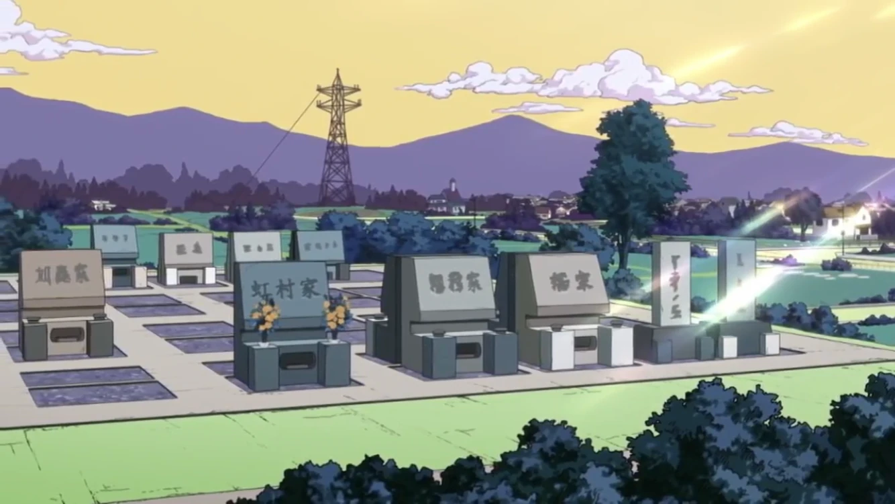

There's tons of landmarks all over the city for you to explore, so many we aren't even sure if we can list them all, so we'll only name just a few of our favourites for you to go check out!

Anjuro Rock; despite its strange appearance, it's recently become a hotspot for lovers to meet, as well as the townsfolk generally enjoying it. Rumours around say that people can hear it growl out “Agios” at times…
Boing-Boing Cape; the story goes that a girl tried to commit suicide by jumping off this cliff, but she amazingly bounced back up instead! The local fishermen would happily tell you both where its located, and that they pray at this “sacred spot” for good luck on their fishing trips
The Tower; there's a man by the alias of Toyohiro Kanedaichi that lives within this tower, saying he has never touched the ground since he bought this abandoned telephone pole about three years prior for $100,000 Yen. If you offer him food or spices, he'll allow you to take photos with him! How lovely!
Trattoria Trussardi; the famed Italian restaurant in the Japanese suburbs! It's run by a man named Tonio Trussardi. The gimmick with his small restaurant is that there's no menu whatsoever, he just simply looks his customers up and down and knows what they need pertaining to their health!